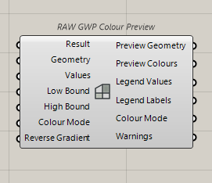
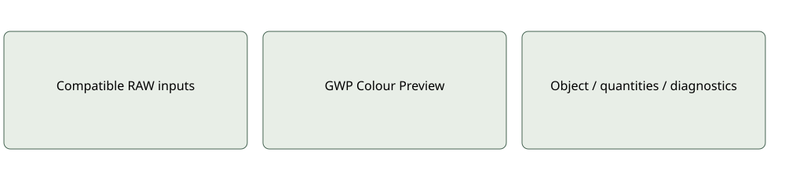

Visualisation
RAW GWP Colour Preview
Maps existing GWP values to geometry colours, with explicit supported normalisation and unavailable handling.
Inputs: Result; Geometry; Values; Low Bound; High Bound; Colour Mode; Reverse Gradient
Outputs: Preview Geometry; Preview Colours; Legend Values; Legend Labels; Colour Mode; Warnings
Visualisation only; no environmental recalculation.Use and limitations
Optional and mode-specific ports may remain serialized when hidden. Inspect quantities, source provenance and coverage before interpreting results. A missing input is not an inferred zero.